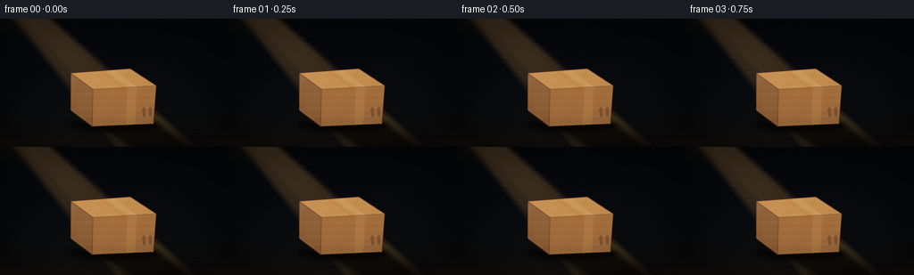
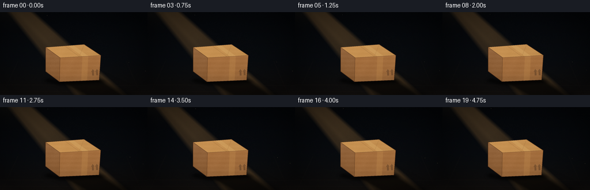
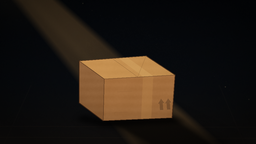
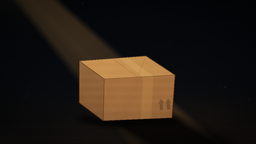

CODING AGENTS AS PIXEL WORLD MODELS
traex/GPT-5.6-Sol · phygen_045
点击播放 · 原生 RGB 像素
逐轮保存的候选
回放视频、检查图与代码变化。
每份候选均可单独播放。实际图片检查记录在下方工具轨迹中。
候选 01播放与检查图
点击播放 · 原生 RGB 像素


展开代码变化
--- 上一保存版本
+++ 本次保存版本
@@ -0,0 +1,221 @@
+from pathlib import Path
+import math
+import numpy as np
+from PIL import Image, ImageDraw, ImageFilter
+import artifact_io
+
+# Procedural, deterministic 2-D cinematic rendering. Everything is rendered at
+# 4x resolution and reduced for soft, antialiased edges.
+W, H, N = 256, 144, 20
+S = 4
+RW, RH = W*S, H*S
+ROOT = Path(__file__).resolve().parent
+rng = np.random.default_rng(4501)
+
+# Static film/cardboard texture so that the scene does not boil between frames.
+static_noise = rng.normal(0, 1, (RH, RW)).astype(np.float32)
+# Lightly correlated noise gives the floor and card stock a natural tooth.
+noise_im = Image.fromarray(np.uint8(np.clip(static_noise*28+128, 0, 255)), 'L')
+soft_noise = (np.asarray(noise_im.filter(ImageFilter.GaussianBlur(2.1)), dtype=np.float32)-128.0)/28.0
+
+# Stable dust motes. x/y are normalized screen coordinates.
+dust = []
+for _ in range(49):
+ y = rng.uniform(-0.08, 1.06)
+ # Diagonal beam occupies roughly x-y in [0.08, .36].
+ x = y + rng.uniform(0.10, 0.33)
+ dust.append((x, y, rng.uniform(.35, 1.0), rng.uniform(0, 2*math.pi), rng.uniform(.25, .8)))
+
+def mask_polygon(points, blur=0):
+ m = Image.new('L', (RW, RH), 0)
+ d = ImageDraw.Draw(m)
+ d.polygon([(int(x*S), int(y*S)) for x,y in points], fill=255)
+ if blur:
+ m = m.filter(ImageFilter.GaussianBlur(blur*S))
+ return np.asarray(m, dtype=np.float32)/255.0
+
+def composite(arr, color, alpha):
+ if alpha.ndim == 2:
+ alpha = alpha[..., None]
+ arr[:] = arr*(1-alpha) + np.asarray(color, dtype=np.float32)*alpha
+
+def line_layer(lines, blur=0):
+ im = Image.new('RGBA', (RW, RH), (0,0,0,0))
+ d = ImageDraw.Draw(im)
+ for pts, fill, width in lines:
+ d.line([(int(x*S),int(y*S)) for x,y in pts], fill=fill,
+ width=max(1,int(width*S)), joint='curve')
+ if blur:
+ im = im.filter(ImageFilter.GaussianBlur(blur*S))
+ return im
+
+def draw_box(arr, t):
+ # Tiny breathing camera drift, subpixel after supersampling.
+ ox = .18*math.sin(t*math.tau)
+ oy = .12*math.cos(t*math.tau)
+ def P(seq): return [(x+ox,y+oy) for x,y in seq]
+
+ left = P([(79,61),(104,79),(103,121),(79,103)])
+ front = P([(104,79),(175,75),(172,118),(103,121)])
+ top = P([(79,61),(146,56),(175,75),(104,79)])
+
+ yy, xx = np.mgrid[0:RH,0:RW].astype(np.float32)
+ # Fine horizontal fibres and low-frequency mottling.
+ fibres = 2.0*np.sin(yy*.19) + 1.0*np.sin(xx*.061 + yy*.027) + soft_noise*4.2
+
+ ml = mask_polygon(left, .12)
+ mf = mask_polygon(front, .12)
+ mt = mask_polygon(top, .10)
+
+ # Faces use directional gradients so the upper-left light reads in 3-D.
+ left_rgb = np.zeros_like(arr)
+ left_l = np.clip((120 - yy/S)/65, 0, 1)
+ for c, base in enumerate((137,91,51)):
+ left_rgb[...,c] = base + fibres + left_l*12
+ a = ml[...,None]
+ arr[:] = arr*(1-a)+left_rgb*a
+
+ front_rgb = np.zeros_like(arr)
+ fg = np.clip((126-yy/S)/55,0,1) + np.clip((180-xx/S)/120,0,1)*.22
+ for c, base in enumerate((151,102,58)):
+ front_rgb[...,c] = base + fibres*1.05 + fg*(15 if c==0 else 10 if c==1 else 5)
+ a = mf[...,None]
+ arr[:] = arr*(1-a)+front_rgb*a
+
+ top_rgb = np.zeros_like(arr)
+ tg = np.clip((190-xx/S)/150,0,1)
+ for c, base in enumerate((190,139,78)):
+ top_rgb[...,c] = base + fibres*.8 + tg*(15 if c==0 else 11 if c==1 else 7)
+ a = mt[...,None]
+ arr[:] = arr*(1-a)+top_rgb*a
+
+ # Packing tape: one strip wraps across top and down the front.
+ tape_top = mask_polygon(P([(118,58.1),(127,57.4),(153,76.2),(143,76.8)]), .12)
+ tape_front = mask_polygon(P([(143,76.8),(153,76.2),(151,119.0),(141,119.4)]), .12)
+ # Amber tape is glossy but translucent enough to retain cardboard texture.
+ composite(arr, (211,165,99), tape_top*.50)
+ composite(arr, (190,137,76), tape_front*.34)
+
+ # Printed handling arrows on lower front, understated dark ink.
+ ink = Image.new('RGBA',(RW,RH),(0,0,0,0)); di=ImageDraw.Draw(ink)
+ def poly(q, fill): di.polygon([(int((x+ox)*S),int((y+oy)*S)) for x,y in q],fill=fill)
+ poly([(158,104),(161,99),(164,103),(162.7,103.1),(163,110),(160,110.2),(159.7,103.4)], (69,45,28,95))
+ poly([(165,103.7),(168,98.7),(171,102.5),(169.6,102.7),(170,109.6),(167,109.8),(166.7,103)], (69,45,28,95))
+ arr[:] = np.asarray(Image.alpha_composite(Image.fromarray(np.uint8(np.clip(arr,0,255)),'RGB').convert('RGBA'),ink).convert('RGB'),dtype=np.float32)
+
+ # Edges, flap seams, and short natural scuffs.
+ edge_lines = [
+ (P([(79,61),(146,56),(175,75),(172,118),(103,121),(79,103),(79,61)]),(55,31,17,210),.8),
+ (P([(79,61),(104,79),(175,75)]),(72,42,22,200),.65),
+ (P([(104,79),(103,121)]),(65,38,21,170),.7),
+ (P([(112,58.6),(137.5,77.1)]),(92,58,30,145),.45),
+ (P([(146,56),(137.5,77.1)]),(104,66,34,110),.4),
+ (P([(117,92),(132,91.2)]),(116,72,38,65),.35),
+ (P([(112,113),(128,112.3)]),(92,56,31,48),.35),
+ ]
+ ed = line_layer(edge_lines)
+ arr[:] = np.asarray(Image.alpha_composite(Image.fromarray(np.uint8(np.clip(arr,0,255)),'RGB').convert('RGBA'),ed).convert('RGB'),dtype=np.float32)
+
+ # Thin warm rim where the beam meets the box's top edges.
+ rim = line_layer([
+ (P([(80,60.6),(146,55.7),(174,74.7)]),(255,213,142,105),.48),
+ (P([(80,60.8),(103.7,78.7)]),(239,184,105,65),.35)
+ ], blur=.18)
+ arr[:] = np.asarray(Image.alpha_composite(Image.fromarray(np.uint8(np.clip(arr,0,255)),'RGB').convert('RGBA'),rim).convert('RGB'),dtype=np.float32)
+
+
+def render(i):
+ t = i/N
+ yy, xx = np.mgrid[0:RH,0:RW].astype(np.float32)
+ x, y = xx/S, yy/S
+
+ # Near-black room, with only a trace of cool ambient detail.
+ arr = np.empty((RH,RW,3),np.float32)
+ wall_grad = np.clip(y/100,0,1)
+ arr[...,0] = 5.0 + wall_grad*4.5
+ arr[...,1] = 7.0 + wall_grad*5.0
+ arr[...,2] = 10.0 + wall_grad*5.5
+
+ # Floor plane begins behind the box. Warm charcoal, subtly textured.
+ floor = np.clip((y-84)/60,0,1)
+ floor_col = np.stack([13+8*floor, 12+6*floor, 12+4*floor],axis=-1)
+ arr = arr*(1-floor[...,None]) + floor_col*floor[...,None]
+ arr += soft_noise[...,None]*np.array([1.4,1.2,1.0],np.float32)
+
+ # A wide diagonal shaft: upper-left to lower-right, softly bounded.
+ # q measures distance across the beam. Width expands toward the viewer.
+ center = 36 + 0.965*y
+ halfw = 15.5 + .16*y
+ q = np.abs(x-center)
+ beam = np.clip((halfw+10-q)/10,0,1)
+ beam *= np.clip((156-y)/35,0,1)*.18 + .82
+ beam *= .965 + .022*math.sin(i*.48) + .013*math.sin(i*1.17+1.2)
+ # It is brighter in the air toward the top, but pools warmly on the floor.
+ air_strength = .18 + .09*np.clip((90-y)/90,0,1)
+ floor_boost = .13*np.clip((y-79)/40,0,1)
+ composite(arr,(208,149,78), beam*(air_strength+floor_boost))
+
+ # Layered inner rays suggest a real opening rather than a flat polygon.
+ r1=np.exp(-((x-(30+.965*y))/7.5)**2)*np.clip((145-y)/60,0,1)
+ r2=np.exp(-((x-(45+.965*y))/12.0)**2)*np.clip((150-y)/75,0,1)
+ composite(arr,(240,190,115),(r1*.038+r2*.028)*beam)
+
+ # Sparse perspective floor seams and scratches, visible only in spill light.
+ floor_lines = Image.new('RGBA',(RW,RH),(0,0,0,0)); fd=ImageDraw.Draw(floor_lines)
+ for y0 in (126,137):
+ fd.line([(0,int(y0*S)),(RW,int((y0+1.2)*S))],fill=(93,68,45,18),width=1*S)
+ for x0 in (31,219):
+ fd.line([(int(x0*S),int(85*S)),(int((x0+(x0-128)*.28)*S),RH)],fill=(80,59,42,14),width=1*S)
+ arr[:] = np.asarray(Image.alpha_composite(Image.fromarray(np.uint8(np.clip(arr,0,255)),'RGB').convert('RGBA'),floor_lines).convert('RGB'),dtype=np.float32)
+
+ # Cast shadow, aligned with the down-right direction of the incoming light.
+ # Several masks create umbra + broad penumbra; it visibly reaches the bottom.
+ shadow_outer = mask_polygon([(99,116),(171,113),(236,145),(135,145)],5.2)
+ shadow_mid = mask_polygon([(102,117),(171,115),(225,145),(143,145)],2.8)
+ shadow_core = mask_polygon([(104,118),(169,116),(211,144),(151,144)],1.25)
+ composite(arr,(2,3,4),shadow_outer*.35)
+ composite(arr,(1,2,2),shadow_mid*.43)
+ composite(arr,(1,1,2),shadow_core*.47)
+ # Dense contact shadow anchors the box.
+ contact=mask_polygon([(83,115),(105,119),(173,116),(186,122),(103,127),(76,120)],2.25)
+ composite(arr,(1,1,1),contact*.68)
+
+ # Dust behind/in the light ray; motion is slow, buoyant, and loop-like.
+ dust_layer=Image.new('RGBA',(RW,RH),(0,0,0,0)); dd=ImageDraw.Draw(dust_layer)
+ for j,(dx,dy,size,phase,speed) in enumerate(dust):
+ py=(dy + .018*math.sin(math.tau*t*speed+phase))%1.12-.04
+ px=dx + .010*math.sin(math.tau*t*(speed*.73)+phase*1.7)
+ X,Y=px*W,py*H
+ # Do not draw motes on the box area; they should remain in the air.
+ if 72<X<183 and 52<Y<124: continue
+ tw=.35+.65*(.5+.5*math.sin(math.tau*t*(.6+speed)+phase))
+ rad=max(1,int(size*S*.55))
+ a=int(22+70*tw*size)
+ dd.ellipse((int(X*S-rad),int(Y*S-rad),int(X*S+rad),int(Y*S+rad)),fill=(255,220,157,a))
+ dust_layer=dust_layer.filter(ImageFilter.GaussianBlur(.30*S))
+ arr[:] = np.asarray(Image.alpha_composite(Image.fromarray(np.uint8(np.clip(arr,0,255)),'RGB').convert('RGBA'),dust_layer).convert('RGB'),dtype=np.float32)
+
+ draw_box(arr,t)
+
+ # Soft halo just outside the top-left frame implies an off-camera opening.
+ glow=np.exp(-(((x-18)/31)**2+((y+8)/26)**2))
+ composite(arr,(231,182,111),glow*.055)
+
+ # Cinematic vignette and a restrained film grain.
+ nx=(x-W/2)/(W/2); ny=(y-H*.48)/(H*.58)
+ vign=np.clip(1-.40*np.maximum(0,(nx*nx+ny*ny)-.20),.56,1)
+ arr*=vign[...,None]
+ frame_noise=np.random.default_rng(9000+i).normal(0,.65,(RH,RW,1))
+ arr+=frame_noise
+ arr=np.uint8(np.clip(arr,0,255))
+ # LANCZOS reduction integrates the supersampled lighting and texture.
+ return np.asarray(Image.fromarray(arr,'RGB').resize((W,H),Image.Resampling.LANCZOS),dtype=np.uint8)
+
+
+def main():
+ frames=np.stack([render(i) for i in range(N)],axis=0)
+ assert frames.shape==(20,144,256,3) and frames.dtype==np.uint8
+ artifact_io.save(frames,ROOT)
+
+if __name__=='__main__':
+ main()
候选 02播放与检查图
点击播放 · 原生 RGB 像素

展开代码变化
--- 上一保存版本
+++ 本次保存版本
@@ -155,6 +155,13 @@
floor_boost = .13*np.clip((y-79)/40,0,1)
composite(arr,(208,149,78), beam*(air_strength+floor_boost))
+ # Diffuse pool bounced from the floor. Besides grounding the scene this
+ # provides just enough surrounding value for the projected shadow to read
+ # clearly while the room itself remains black.
+ floor_pool = np.exp(-(((x-170)/88)**2 + ((y-128)/31)**2))
+ floor_pool *= np.clip((y-80)/25, 0, 1)
+ composite(arr, (88,57,31), floor_pool*.17)
+
# Layered inner rays suggest a real opening rather than a flat polygon.
r1=np.exp(-((x-(30+.965*y))/7.5)**2)*np.clip((145-y)/60,0,1)
r2=np.exp(-((x-(45+.965*y))/12.0)**2)*np.clip((150-y)/75,0,1)
@@ -170,12 +177,12 @@
# Cast shadow, aligned with the down-right direction of the incoming light.
# Several masks create umbra + broad penumbra; it visibly reaches the bottom.
- shadow_outer = mask_polygon([(99,116),(171,113),(236,145),(135,145)],5.2)
- shadow_mid = mask_polygon([(102,117),(171,115),(225,145),(143,145)],2.8)
- shadow_core = mask_polygon([(104,118),(169,116),(211,144),(151,144)],1.25)
- composite(arr,(2,3,4),shadow_outer*.35)
- composite(arr,(1,2,2),shadow_mid*.43)
- composite(arr,(1,1,2),shadow_core*.47)
+ shadow_outer = mask_polygon([(95,114),(171,112),(244,145),(133,145)],5.2)
+ shadow_mid = mask_polygon([(101,117),(171,114),(233,145),(143,145)],2.8)
+ shadow_core = mask_polygon([(105,118),(169,116),(219,144),(151,144)],1.25)
+ composite(arr,(2,3,4),shadow_outer*.43)
+ composite(arr,(1,2,2),shadow_mid*.50)
+ composite(arr,(1,1,2),shadow_core*.52)
# Dense contact shadow anchors the box.
contact=mask_polygon([(83,115),(105,119),(173,116),(186,122),(103,127),(76,120)],2.25)
composite(arr,(1,1,1),contact*.68)
候选 03播放与检查图
可观测工具轨迹
实际执行的命令与返回图片。
命令 1exit 0
/bin/bash -lc "cat prompt.txt && printf '\\n--- GENERATION_RULES.md ---\\n' && cat GENERATION_RULES.md"
命令 2exit 0
/bin/bash -lc "cat task_spec.json && printf '\\n--- FILES ---\\n' && find . -maxdepth 2 -type f -printf '%p\\n' | sort"
命令 3exit 0
/bin/bash -lc "command -v ffmpeg; command -v blender; command -v python3; python3 - <<'PY' mods=['PIL','numpy','cv2','imageio','moviepy','torch'] for m in mods: try: x=__import__(m); print(m,'OK',getattr(x,'__version__','')) except Exception as e: print(m,'NO',e) PY"
命令 4exit 0
/bin/bash -lc 'cat artifact_io.py'
命令 5exit 0
/bin/bash -lc "cat > generate.py <<'PY'
from pathlib import Path
import math
import numpy as np
from PIL import Image, ImageDraw, ImageFilter
import artifact_io
# Procedural, deterministic 2-D cinematic rendering. Everything is rendered at
# 4x resolution and reduced for soft, antialiased edges.
W, H, N = 256, 144, 20
S = 4
RW, RH = W*S, H*S
ROOT = Path(__file__).resolve().parent
rng = np.random.default_rng(4501)
# Static film/cardboard texture so that the scene does not boil between frames.
static_noise = rng.normal(0, 1, (RH, RW)).astype(np.float32)
# Lightly correlated noise gives the floor and card stock a natural tooth.
noise_im = Image.fromarray(np.uint8(np.clip(static_noise*28+128, 0, 255)), 'L')
soft_noise = (np.asarray(noise_im.filter(ImageFilter.GaussianBlur(2.1)), dtype=np.float32)-128.0)/28.0
# Stable dust motes. x/y are normalized screen coordinates.
dust = []
for _ in range(49):
y = rng.uniform(-0.08, 1.06)
# Diagonal beam occupies roughly x-y in [0.08, .36].
x = y + rng.uniform(0.10, 0.33)
dust.append((x, y, rng.uniform(.35, 1.0), rng.uniform(0, 2*math.pi), rng.uniform(.25, .8)))
def mask_polygon(points, blur=0):
m = Image.new('L', (RW, RH), 0)
d = ImageDraw.Draw(m)
d.polygon([(int(x*S), int(y*S)) for x,y in points], fill=255)
if blur:
m = m.filter(ImageFilter.GaussianBlur(blur*S))
return np.asarray(m, dtype=np.float32)/255.0
def composite(arr, color, alpha):
if alpha.ndim == 2:
alpha = alpha[..., None]
arr[:] = arr*(1-alpha) + np.asarray(color, dtype=np.float32)*alpha
def line_layer(lines, blur=0):
im = Image.new('RGBA', (RW, RH), (0,0,0,0))
d = ImageDraw.Draw(im)
for pts, fill, width in lines:
d.line([(int(x*S),int(y*S)) for x,y in pts], fill=fill,
width=max(1,int(width*S)), joint='curve')
if blur:
im = im.filter(ImageFilter.GaussianBlur(blur*S))
return im
def draw_box(arr, t):
# Tiny breathing camera drift, subpixel after supersampling.
ox = .18*math.sin(t*math.tau)
oy = .12*math.cos(t*math.tau)
def P(seq): return [(x+ox,y+oy) for x,y in seq]
left = P([(79,61),(104,79),(103,121),(79,103)])
front = P([(104,79),(175,75),(172,118),(103,121)])
top = P([(79,61),(146,56),(175,75),(104,79)])
yy, xx = np.mgrid[0:RH,0:RW].astype(np.float32)
# Fine horizontal fibres and low-frequency mottling.
fibres = 2.0*np.sin(yy*.19) + 1.0*np.sin(xx*.061 + yy*.027) + soft_noise*4.2
ml = mask_polygon(left, .12)
mf = mask_polygon(front, .12)
mt = mask_polygon(top, .10)
# Faces use directional gradients so the upper-left light reads in 3-D.
left_rgb = np.zeros_like(arr)
left_l = np.clip((120 - yy/S)/65, 0, 1)
for c, base in enumerate((137,91,51)):
left_rgb[...,c] = base + fibres + left_l*12
a = ml[...,None]
arr[:] = arr*(1-a)+left_rgb*a
front_rgb = np.zeros_like(arr)
fg = np.clip((126-yy/S)/55,0,1) + np.clip((180-xx/S)/120,0,1)*.22
for c, base in enumerate((151,102,58)):
front_rgb[...,c] = base + fibres*1.05 + fg*(15 if c==0 else 10 if c==1 else 5)
a = mf[...,None]
arr[:] = arr*(1-a)+front_rgb*a
top_rgb = np.zeros_like(arr)
tg = np.clip((190-xx/S)/150,0,1)
for c, base in enumerate((190,139,78)):
top_rgb[...,c] = base + fibres*.8 + tg*(15 if c==0 else 11 if c==1 else 7)
a = mt[...,None]
arr[:] = arr*(1-a)+top_rgb*a
# Packing tape: one strip wraps across top and down the front.
tape_top = mask_polygon(P([(118,58.1),(127,57.4),(153,76.2),(143,76.8)]), .12)
tape_front = mask_polygon(P([(143,76.8),(153,76.2),(151,119.0),(141,119.4)]), .12)
# Amber tape is glossy but translucent enough to retain cardboard texture.
composite(arr, (211,165,99), tape_top*.50)
composite(arr, (190,137,76), tape_front*.34)
# Printed handling arrows on lower front, understated dark ink.
ink = Image.new('RGBA',(RW,RH),(0,0,0,0)); di=ImageDraw.Draw(ink)
def poly(q, fill): di.polygon([(int((x+ox)*S),int((y+oy)*S)) for x,y in q],fill=fill)
poly([(158,104),(161,99),(164,103),(162.7,103.1),(163,110),(160,110.2),(159.7,103.4)], (69,45,28,95))
poly([(165,103.7),(168,98.7),(171,102.5),(169.6,102.7),(170,109.6),(167,109.8),(166.7,103)], (69,45,28,95))
arr[:] = np.asarray(Image.alpha_composite(Image.fromarray(np.uint8(np.clip(arr,0,255)),'RGB').convert('RGBA'),ink).convert('RGB'),dtype=np.float32)
# Edges, flap seams, and short natural scuffs.
edge_lines = [
(P([(79,61),(146,56),(175,75),(172,118),(103,121),(79,103),(79,61)]),(55,31,17,210),.8),
(P([(79,61),(104,79),(175,75)]),(72,42,22,200),.65),
(P([(104,79),(103,121)]),(65,38,21,170),.7),
(P([(112,58.6),(137.5,77.1)]),(92,58,30,145),.45),
(P([(146,56),(137.5,77.1)]),(104,66,34,110),.4),
(P([(117,92),(132,91.2)]),(116,72,38,65),.35),
(P([(112,113),(128,112.3)]),(92,56,31,48),.35),
]
ed = line_layer(edge_lines)
arr[:] = np.asarray(Image.alpha_composite(Image.fromarray(np.uint8(np.clip(arr,0,255)),'RGB').convert('RGBA'),ed).convert('RGB'),dtype=np.float32)
# Thin warm rim where the beam meets the box's top edges.
rim = line_layer([
(P([(80,60.6),(146,55.7),(174,74.7)]),(255,213,142,105),.48),
(P([(80,60.8),(103.7,78.7)]),(239,184,105,65),.35)
], blur=.18)
arr[:] = np.asarray(Image.alpha_composite(Image.fromarray(np.uint8(np.clip(arr,0,255)),'RGB').convert('RGBA'),rim).convert('RGB'),dtype=np.float32)
def render(i):
t = i/N
yy, xx = np.mgrid[0:RH,0:RW].astype(np.float32)
x, y = xx/S, yy/S
# Near-black room, with only a trace of cool ambient detail.
arr = np.empty((RH,RW,3),np.float32)
wall_grad = np.clip(y/100,0,1)
arr[...,0] = 5.0 + wall_grad*4.5
arr[...,1] = 7.0 + wall_grad*5.0
arr[...,2] = 10.0 + wall_grad*5.5
# Floor plane begins behind the box. Warm charcoal, subtly textured.
floor = np.clip((y-84)/60,0,1)
floor_col = np.stack([13+8*floor, 12+6*floor, 12+4*floor],axis=-1)
arr = arr*(1-floor[...,None]) + floor_col*floor[...,None]
arr += soft_noise[...,None]*np.array([1.4,1.2,1.0],np.float32)
# A wide diagonal shaft: upper-left to lower-right, softly bounded.
# q measures distance across the beam. Width expands toward the viewer.
center = 36 + 0.965*y
halfw = 15.5 + .16*y
q = np.abs(x-center)
beam = np.clip((halfw+10-q)/10,0,1)
beam *= np.clip((156-y)/35,0,1)*.18 + .82
beam *= .965 + .022*math.sin(i*.48) + .013*math.sin(i*1.17+1.2)
# It is brighter in the air toward the top, but pools warmly on the floor.
air_strength = .18 + .09*np.clip((90-y)/90,0,1)
floor_boost = .13*np.clip((y-79)/40,0,1)
composite(arr,(208,149,78), beam*(air_strength+floor_boost))
# Layered inner rays suggest a real opening rather than a flat polygon.
r1=np.exp(-((x-(30+.965*y))/7.5)**2)*np.clip((145-y)/60,0,1)
r2=np.exp(-((x-(45+.965*y))/12.0)**2)*np.clip((150-y)/75,0,1)
composite(arr,(240,190,115),(r1*.038+r2*.028)*beam)
# Sparse perspective floor seams and scratches, visible only in spill light.
floor_lines = Image.new('RGBA',(RW,RH),(0,0,0,0)); fd=ImageDraw.Draw(floor_lines)
for y0 in (126,137):
fd.line([(0,int(y0*S)),(RW,int((y0+1.2)*S))],fill=(93,68,45,18),width=1*S)
for x0 in (31,219):
fd.line([(int(x0*S),int(85*S)),(int((x0+(x0-128)*.28)*S),RH)],fill=(80,59,42,14),width=1*S)
arr[:] = np.asarray(Image.alpha_composite(Image.fromarray(np.uint8(np.clip(arr,0,255)),'RGB').convert('RGBA'),floor_lines).convert('RGB'),dtype=np.float32)
# Cast shadow, aligned with the down-right direction of the incoming light.
# Several masks create umbra + broad penumbra; it visibly reaches the bottom.
shadow_outer = mask_polygon([(99,116),(171,113),(236,145),(135,145)],5.2)
shadow_mid = mask_polygon([(102,117),(171,115),(225,145),(143,145)],2.8)
shadow_core = mask_polygon([(104,118),(169,116),(211,144),(151,144)],1.25)
composite(arr,(2,3,4),shadow_outer*.35)
composite(arr,(1,2,2),shadow_mid*.43)
composite(arr,(1,1,2),shadow_core*.47)
# Dense contact shadow anchors the box.
contact=mask_polygon([(83,115),(105,119),(173,116),(186,122),(103,127),(76,120)],2.25)
composite(arr,(1,1,1),contact*.68)
# Dust behind/in the light ray; motion is slow, buoyant, and loop-like.
dust_layer=Image.new('RGBA',(RW,RH),(0,0,0,0)); dd=ImageDraw.Draw(dust_layer)
for j,(dx,dy,size,phase,speed) in enumerate(dust):
py=(dy + .018*math.sin(math.tau*t*speed+phase))%1.12-.04
px=dx + .010*math.sin(math.tau*t*(speed*.73)+phase*1.7)
X,Y=px*W,py*H
# Do not draw motes on the box area; they should remain in the air.
if 72<X<183 and 52<Y<124: continue
tw=.35+.65*(.5+.5*math.sin(math.tau*t*(.6+speed)+phase))
rad=max(1,int(size*S*.55))
a=int(22+70*tw*size)
dd.ellipse((int(X*S-rad),int(Y*S-rad),int(X*S+rad),int(Y*S+rad)),fill=(255,220,157,a))
dust_layer=dust_layer.filter(ImageFilter.GaussianBlur(.30*S))
arr[:] = np.asarray(Image.alpha_composite(Image.fromarray(np.uint8(np.clip(arr,0,255)),'RGB').convert('RGBA'),dust_layer).convert('RGB'),dtype=np.float32)
draw_box(arr,t)
# Soft halo just outside the top-left frame implies an off-camera opening.
glow=np.exp(-(((x-18)/31)**2+((y+8)/26)**2))
composite(arr,(231,182,111),glow*.055)
# Cinematic vignette and a restrained film grain.
nx=(x-W/2)/(W/2); ny=(y-H*.48)/(H*.58)
vign=np.clip(1-.40*np.maximum(0,(nx*nx+ny*ny)-.20),.56,1)
arr*=vign[...,None]
frame_noise=np.random.default_rng(9000+i).normal(0,.65,(RH,RW,1))
arr+=frame_noise
arr=np.uint8(np.clip(arr,0,255))
# LANCZOS reduction integrates the supersampled lighting and texture.
return np.asarray(Image.fromarray(arr,'RGB').resize((W,H),Image.Resampling.LANCZOS),dtype=np.uint8)
def main():
frames=np.stack([render(i) for i in range(N)],axis=0)
assert frames.shape==(20,144,256,3) and frames.dtype==np.uint8
artifact_io.save(frames,ROOT)
if __name__=='__main__':
main()
PY
python3 generate.py
python3 - <<'PY'
import numpy as np
z=np.load('pixels.npz')['pixels']
print('pixels',z.shape,z.dtype,'range',hex(int(z.min())),hex(int(z.max())))
from PIL import Image
print('inspection',Image.open('inspection.png').size)
PY"命令 6exit 1
/bin/bash -lc "python3 generate.py >/tmp/render.log 2>&1 && python3 - <<'PY'
import numpy as np
from PIL import Image
z=np.load('pixels.npz')['pixels']
assert z.shape==(144,256,20) and z.dtype==np.uint32
assert len(list(__import__('pathlib').Path('frames').glob('*.png')))==20
for p in sorted(__import__('pathlib').Path('frames').glob('*.png')):
im=np.asarray(Image.open(p)); assert im.shape==(144,256,3) and im.dtype==np.uint8
print('validated:', z.shape, '20 RGB frames, index.html bytes', __import__('pathlib').Path('index.html').stat().st_size)
PY"命令 7exit 0
/bin/bash -lc "python3 generate.py >.tmp/render.log 2>&1 && python3 - <<'PY'
import numpy as np
from PIL import Image
from pathlib import Path
z=np.load('pixels.npz')['pixels']
assert z.shape==(144,256,20) and z.dtype==np.uint32
paths=sorted(Path('frames').glob('*.png')); assert len(paths)==20
for p in paths:
im=np.asarray(Image.open(p)); assert im.shape==(144,256,3) and im.dtype==np.uint8
print('validated:',z.shape,'20 RGB frames, index.html bytes',Path('index.html').stat().st_size)
PY"视觉工具实际返回图片 1

视觉工具实际返回图片 2

视觉工具实际返回图片 3

保存候选 3 份；完成命令 7 次；可验证图片返回 3 张。原始 API 响应与完整日志保留在本地。